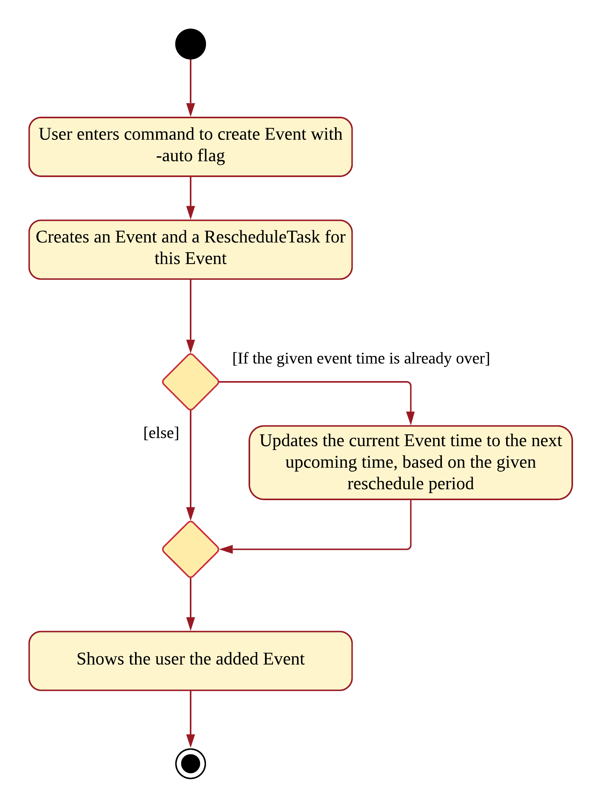

1. Overview
Table of Contents:
-
Contributions to the Developer’s Guide
-
Design Considerations
-
UML Diagrams
-
2. About the Project
My team of 5 software engineering students were tasked with enhancing a basic command line interface (CLI) desktop address book application for our Software Engineering project.
2.1. Context
Living in a dynamic world where tasks and events are constantly changing, we recognised a need for a dynamic scheduler that can help computer-savvy college students excel in their busy lives. As such, our team decided to morph the addressbook application into a student assistant.
We decided to call her ELISA, an Exceptionally Loud and Intelligent Student Assistant. Our application enables users to add and track their tasks and events while receiving reminders for them. The assistant is in the form of a chat bot and she was given a sassy and humorous personality to enhance the user experience. There are also other features to aid the productivity of students and serve as an entertaining companion.
2.2. About ELISA
Here is a brief introduction of ELISA. This is one of the views of ELISA:

Upon startup, ELISA would show the default (T)ask tab. However, as I was more involved in the Events, I have chosen to show the (E)vent tab instead.
Now that I’ve briefly introduced ELISA, the remaining sections will be mainly focusing on what I contributed.
3. Summary of Contributions
In this section, I will be briefly going through my contributions to this team project. For the full extent of my contributions to the project, please visit here.
3.1. My Role
My role lies mainly in the logic component. I refactored most of the code in the logic such as the commands in AddressBook as well as the parser. Given below are the new features that I’ve added for this project.
Enhancement added: Automatic rescheduling of recurring events (Major Feature). |
What it does:
Updates the time of recurring events automatically. For example, weekly events’ time will be updated when it has passed.
Justification:
Users might have events that occur weekly such as CS2103T Quiz. When the deadline is over, users would have to manually change the date to next weeks’. However, with this feature, ELISA can change it for them, making it more convenient to update events and keep them relevant.
Highlights:
This enhancement works for 3 aspects:
1) When creating a new event, if the event is already over, AutoReschedule immediately updates its time.
2) When ELISA is running, the view will automatically be refreshed to reflect the changes in the Event’s time.
3) When loading from the storage. If the event is already over, ELISA will update it and show the user the new date.
Challenges faced:
I had to use a thread that schedules for event’s date to be updated, however this often interfered with my teammates’ thread for reminders as reminders would need to be rescheduled too. However, the reminder’s time is not relative to the event’s, as such given our constraints, we decided to disallow rescheduling for events with reminders. Given the many possible scenarios of violating this, we decided to implement an ItemBuilder that prevents the build of an item that has both reschedule and reminder.
Also, there was the issue of creating multiple threads for the rescheduling, as there could be an extremely large number of threads, as such, the singleton pattern is used for a thread that serves as an overall manager for all the rescheduling. This made managing the tasks easier as there are many operations such as undo, and edit that requires frequent modifying of the tasks in the thread.
Lastly, updating a past date to an upcoming date required the use of modulo for better efficiency.
Enhancement added: Expanding item view to show its related task, event and reminder (Minor Feature). |
What it does:
Expands the item to show all details of an item. This includes fields of its task, event and reminder, if they are present.
Justification:
Each list shows the minimal details related to the item as we want to keep it concise. However, users viewing the task list might want to know if there is deadline for it, or if there is a reminder associated with it. As such, they can expand the item to show all its details.
Highlights:
This feature works on Task list, Event list and Reminder list, making it convenient to find details, regardless of which view the user is on.
Users can also open and close and item using the commands “open” and “close’ without touching the mouse.
Challenges faced:
However, as the details are shown in a popup, there were issues such as the popup covering over other windows, even when the app is minimised. As such, I had to add a listener to the window in order the popup when required, as well as prevent multiple popups.
3.2. Other Contributions
-
Project Management
PR #51 — Gave suggestions to use LocalDateTime and improve readability of code, which was eventually adopted.
PR #72 — Gave suggestions to use final variables for the string representation of tabs, which was eventually adopted.
(PR #99) (PR #119) (PR #130) () — Gave suggestion related to design principles.
PR #252 — Fixed issues for the team -
Refactoring
PR #82 — Refactored the Logic component and parsers to accept commands and parameters needed for ELISA. Changed flag from "d/" to "-d" to be more intuitive for CLI users. -
Enhancements to existing features
PR #129 — Accept--tk,--eand--rflags for convenient deletion of a sub-item usingedit. Accept10.min.laterparser format. -
Documentation
PR #40 — Updated About-Us and Contact-Us.
(PR #43) (PR #150) (PR #172) (PR #183) — Updated user guide and developer’s guide to be more reader-friendly.
4. Contributions to the User Guide
Given below are sections I contributed to the User Guide for my main feature. They showcase my ability to write documentation targeting end-users. Parts that could not fit into this section are given as links. |
Link to: How edit works
4.1. AutoReschedule Feature
Do you have to go to the supermarket weekly? Complete a quiz weekly? Jog daily? Well this would definitely make your life much easier!
Your events can now update its own time when it is already over! All you need to do is to add a -auto flag, along with a time period.
Here is how you can do it. You might have weekly quizzes due on the same day every week, the command you can enter is event CS2103T Quiz -d 23/11/2019 2359 -auto week.
This creates an event whose date will change every week.
Convenient isn’t it! Now you no longer have to manually change their dates after it is over.
That’s not it! If you add an AutoReschedule event with a date that is already over, ELISA would automatically update its date to show the upcoming one.
This is what I mean. If you add an event that is already over, eg. event quiz 11/08/2019 2359 -auto week:

ELISA immediately changes it to show the upcoming date for this week. ELISA shows 10 NOV as it is 9 NOV at this point.
Also, are you worried that the events wouldn’t be updated if you leave the app? No worries as ELISA’s got you covered!
When you come back again, you would see that all the events that have AutoReschedule would show the upcoming date.
But there is a small drawback… AutoReschedule currently does not work with reminders. That means that if you add an -auto flag for an event, you would not be able to add a -r flag for reminders.
This also means that reminders cannot be created with the -auto flag. But you can look forward to this in V2.0 of ELISA!
|
For the rescheduling period, you can use hour, day, week or the 10.min.later format.
Here are some interesting commands you can try:
-
event grocery shopping -d 9/9/2019 1200 -auto week -
event jog -d 23/11/2019 0800 -auto day -
event smile -d 1.min.later -auto 1.min.later(it’s good to be happy)
5. Contributions to the Developer’s Guide
Given below are sections I contributed to the Developer Guide for the logic implementation, the refactored add and edit, as well as my main feature. They showcase my ability to write technical documentation and the technical depth of my contributions to the project. |
Link to: How add works
5.1. Logic component

API :
Logic.java
-
Logicuses theElisaParserclass to parse the user command. -
This results in a
Commandobject which is executed by theLogicManager. -
The command execution can affect the
ItemModel(e.g. adding an Item). -
The result of the command execution is encapsulated as a
CommandResultobject which is passed back to theUi. -
In addition, the
CommandResultobject can also instruct theUito perform certain actions, such as displaying help to the user. -
More instructions for the
Uican be given through implementingScrollCommand
5.2. Rescheduling of recurring Events automatically
This section talks about how the autoReschedule function is implemented. This feature aims to provide users with greater convenience when scheduling events that occur periodically (eg. weekly deadlines, monthly appointments).
5.2.1. Implementation
To reschedule a task, we need a deadline as we need to be able to calculate the next date. Recall that any Task with a deadline is considered an Event. As such, only Events can be rescheduled.
To automatically reschedule an Event, when creating the Event, include the -auto flag along with its reschedule period (eg -auto day for daily rescheduling)
The accepted parameters for -auto is day, week, month and the format of 10.min.later.
The following diagram shows the process of adding an Event with -auto flag:
Activity diagram of AutoReschedule
 |
In the diagram, when we add the Event initially, we would check the start time of the Event and update it accordingly.
However, this is not the only place where rescheduling occurs. 3 places where rescheduling can occur: 1) When the event is created, as shown in the diagram above. |
To illustrate how they work, first we need to know what classes are involved before we can understand the sequence of actions carried out.
The classes involved in the above rescheduling are:
-
AutoReschedulePeriod— Represents the period of every reschedule (eg day/week/month) -
RescheduleTask— Represents the action to perform when rescheduling its associated event. -
AutoRescheduleManager— Manages all the rescheduling tasks. There is only one of such manager.
To better understand its underlying structure, we can look at the class diagram below:

5.2.2. Internal workings of the command
Now we are ready to look at the sequence of actions. Given below is an example usage scenario of how add behaves at each step:
Step 1. The user enters the command event CS2103T Quiz -d 23/09/2019 2359 -auto week.
Step 2. The Event is created, following the sequence of steps in the section Adding Task/Event. However there are now some extra steps from Step 3 onwards that occur concurrently from the object creation of Event.
Step 3a. The presence of the -auto week creates an AutoReschedulePeriod, which is stored in the Event created. This can be seen in the Class Diagram above.
Step 3b. If the start time of this Event is already over, the Event’s start time will be modified to show the next start time, using this Event’s AutoReschedulePeriod.
Step 4. When LogicManager#execute(model) is called, the presence of AutoReschedulePeriod in the Event triggers the creation of a RescheduleTask, which represents the task of rescheduling this Event.
Step 5. This RescheduleTask is added to an AutoRescheduleManager, which manages all RescheduleTasks.
Step 6. When the start time of this Event has passed, AutoRescheduleManager will call RescheduleTask#run(), and this updates the Event start time, which will be reflected in the Ui.
The following diagrams show how the command event Quiz -d 10.hour.later -auto week is executed from the Logic component.
The first diagram shows the adding of an Event, which may appear familiar as it has a sequence similar to the adding of task in [Add Task/Event feature]. However, there are some minor differences due to the presence of -auto which should be noted.

As mentioned, the key points to take note of in the diagram above is Event#setAutoReschedule(true) and Event#setReschedulePeriod(period).
The significance of these methods will be shown in the continuing diagram below:
From the above diagram, we can see that the presence of AutoReschedulePeriod in Event results in the creation of RescheduleTask which would be queued into the Timer managed by AutoRescheduleManager.
5.2.3. Design considerations
The design considerations for the classes are shown below:
Alternative 1: Creating a AutoRescheduleManager for every RescheduleTask
Pros: Easy for the Timer in AutoRescheduleManager to keep track of its TimerTask.
Cons: There could potentially be many Timer threads.
Alternative 2: (Current) Singleton pattern for AutoRescheduleManager
Pros: Ensure that only one instance can be instantiated as there should only be one manager for all the RescheduleTask. If there are multiple managers, it would be hard to keep track of all of them and it would be difficult to coordinate all the tasks.
Cons: Difficult to create tests for AutoRescheduleManager. Could have many hidden dependencies, which makes code harder to maintain.
6. Conclusion
This marks the end of my contributions to ELISA. This journey has been a meaningful one, as it is the first time I’ve worked with teammates on a software engineering project. Although I’ve reached the end of this module, I hope to continue developing ELISA even after, as I truly believe that she has the potential to be a great companion and have a positive impact on many students.